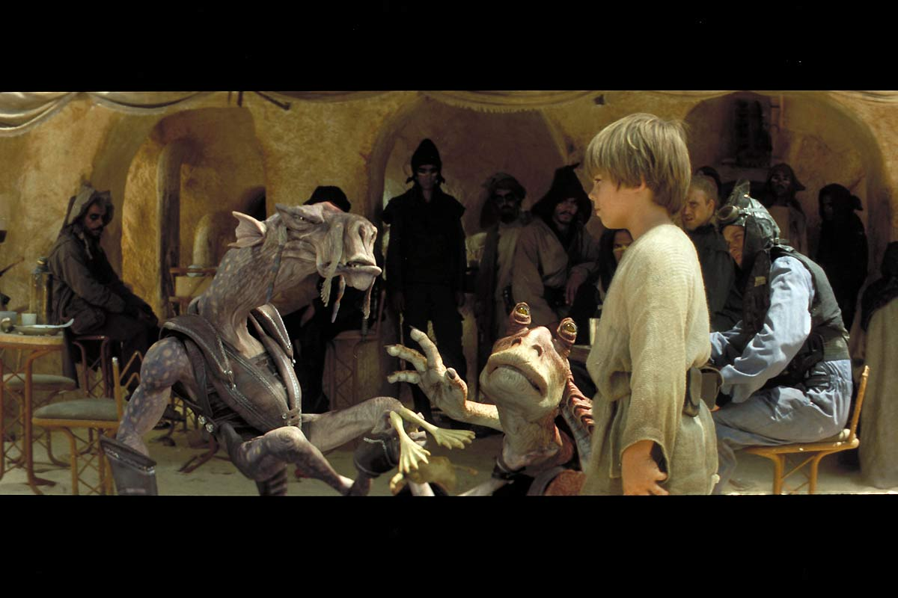
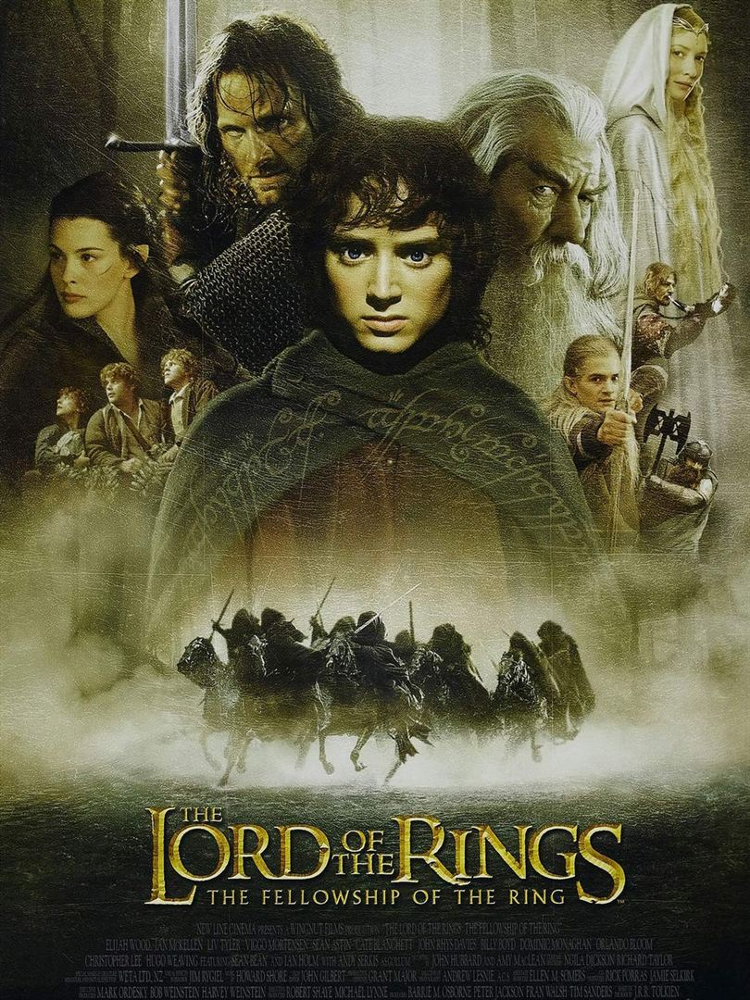
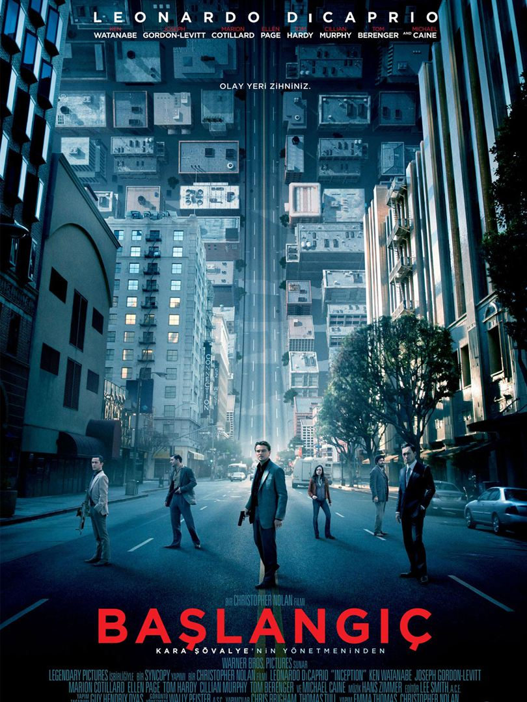
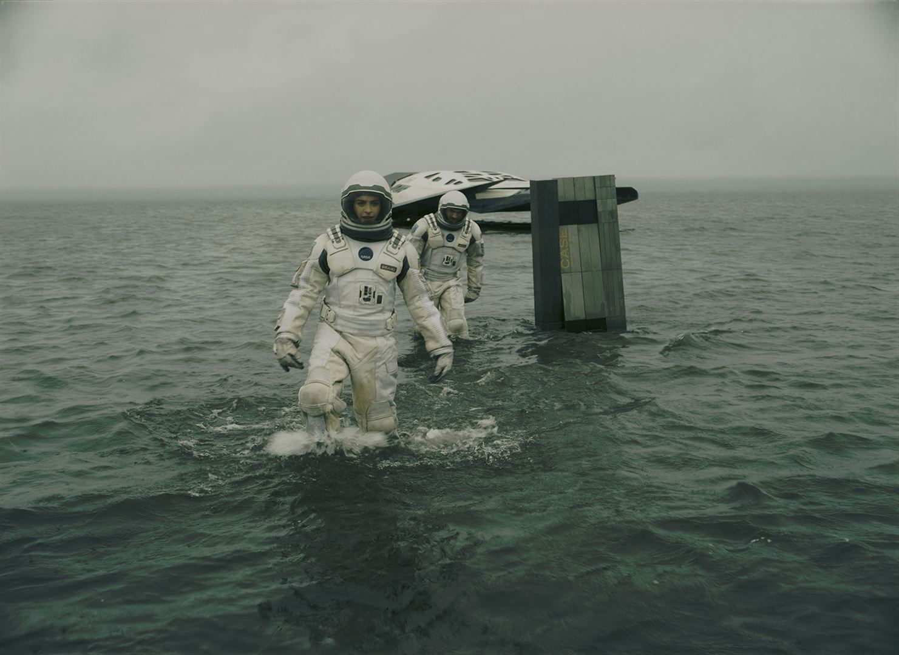
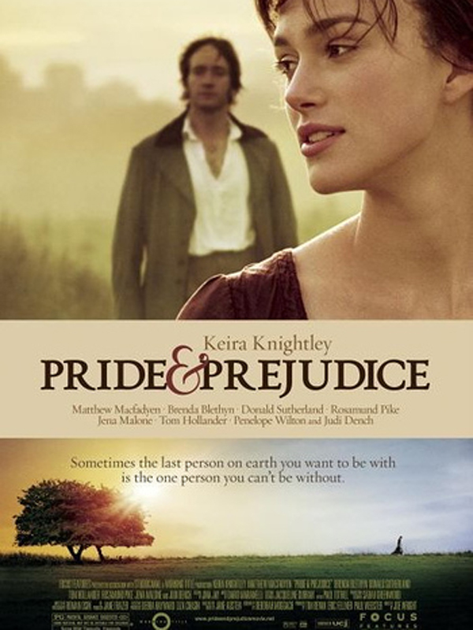
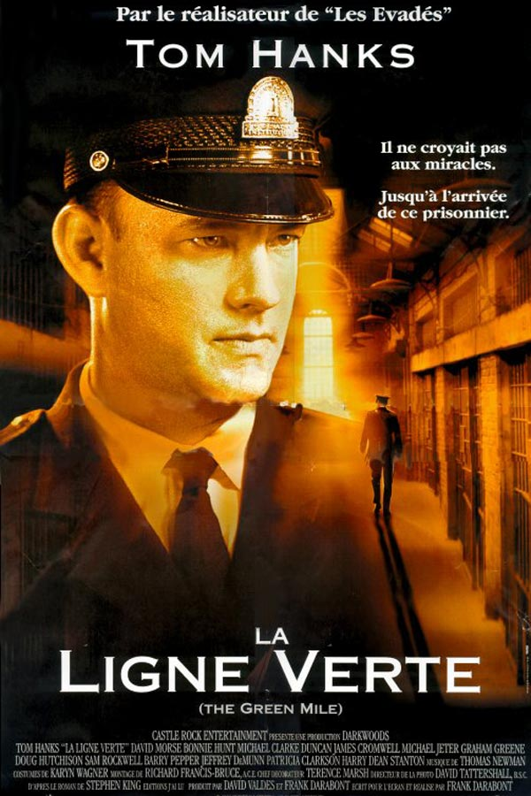
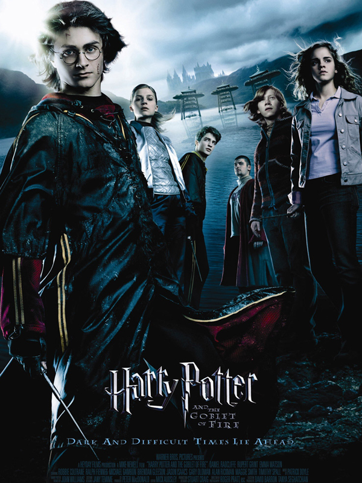
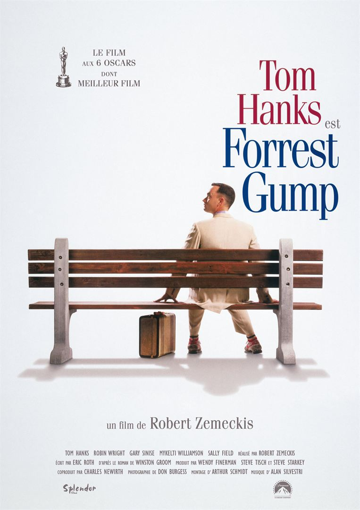

Film Kutusu
En Güncel Film İncelemeleri
Popüler Filmler
- Star Wars 
- Yüzüklerin Efendisi: Yüzük Kardeşliği 
- Başlangıç 
- Yıldızlararası 
- Aşk ve Gurur 
- Yeşil Yol 
- Harry Potter ve Ateş Kadehi 
- Forrest Gump 
Genç Luke Skywalker’ın içindeki gücü keşfedip galaksinin zalim imparatoruna başkaldırmasına henüz on yıllar vardır. Hatta Luke henüz doğmamıştır. Barış içindeki galakside Cumhuriyet hüküm sürmektedir. Barışçıl bir gezegen olan Naboo, iyi yürekli genç Kraliçe Amidala tarafından yönetilmektedir. Gizli Sith Lordu ve onun şampiyonu Darth Maul’un maşası olan Ticaret Federasyonu, barışı sarsacak girişimler ve adil olmayan müzakere taktikleriyle Amidala’yı köşeye sıkıştırmaktadır. Jedi şövalyesi Qui-Gon Jinn ve çömezi Obi-Wan Kenobi durumu incelemek için Naboo’ya gönderilirler. Jedi’lar giderek derinleşen komployu keşfederken 9 yaşındaki Anakin’le tanışırlar. Küçük çocuğun mekaniğe karşı müthiş bir yeteneği ve şeytani bir zekası vardır. Jar Jar Binks isimli geveze ve kurbağamsı mahluğun da dostluğunu edinerek büyüyen uyumsuz grup, bir yandan Federasyonun robot ordularına karşı Amida’lanın yardımına koşarken, öte yandan da Darth Maul’la yüzleşmek zorunda kalacaktır. Galakside bir şeyler, geri dönmemek üzere değişmeye başlamıştır..
Yüzüklerin Efendisi: Yüzük Kardeşliği, dünyanın kaderini değişterecek olan yüzükten kurtulmak için verilen mücadeleyi konu ediyor. Yıllar önce üretilen ve Orta Dünya topraklarına kandan başka hiçbir şey getirmeyen yüzüklerin sonuncusu, üretiminden yüz yıllar sonra ortaya çıkar. Amcasının kendisine emanet ettiği yüzüğün nelere kadir olduğundan habersiz olan Frodo, büyücü Gandalf'ın anlattıkları sonrasında dehşete kapılır. Bu yüzükten ve müstakbel savaşlardan kurtulmanın tek yolu, gücünü toplamaya çalışan Sauron'u da engellemek için bu yüzüğü yok etmektir. Yüzüğü yok edilebileceği tek yer olan Mordor'a götürmek için kendini feda eden savaşçılardan oluşan bir ekip oluşturulur. Çok uzun ve çetin geçecek olan yolculuk başlar. Orta Dünya'nın kaderi, bu insanların ellerindedir.
Leonardo DiCaprio bu yapımda, çok yetenekli bir hırsız olan "Dom Cobb " ile karşımızda. Uzmanlık alanı, zihnin en karanlık ve savunmasız olduğu rüya görme anında, bilinçaltının derinliklerindeki değerli sırları çekip çıkarmak ve onları çalmaktır. Cobb'un bu nadir insanlarda görülebilecek yeteneği, bu ender rastgelinebilecek mahareti, onu kurumsal casusluğun tehlikeli yeni dünyasında aranan bir oyuncu yapmıştır. Aynı zamanda bu durum onu uluslararası bir kaçak yapmış ve sevdiği herşeye malolmuştur. Cobb'a içinde bulunduğu durumdan kurtulmasını sağlayacak bir fırsat sunulur. Ona hayatını geri verebilecek son bir iş; tabi eğer imkansız 'başlangıç'ı tamamlayabilirse. Mükemmel soygun yerine, Cobb ve takımındaki profesyoneller bu sefer tam tersini yapmak zorundadır; görevleri bir fikri çalmak değil onu yerleştirmektir. Eğer başarırlarsa, mükemmel suç bu olacaktır.
Yıldızlararası'nda, teknik bilgisi ve becerisi yüksek olan Cooper, geniş mısır tarlalarında çiftçilik yaparak geçinmektedir; amacı iki çocuğuna güvenli bir hayat sunmaktır. Onlarla yaşayan Büyükbaba Donald çocuklara göz kulak olurken, henüz 10 yaşındaki kızı Murph şaşırtıcı bir zekaya sahiptir. Geçmişte bıraktığı biliminsanı kariyerini özleyen Cooper'un karşısına bir gün beklenmedik bir teklif çıkar ve ailesinin, dahası insanlığın güvenliği için zorlu bir karar alması gerekir..
Film, Jane Austen’in beş kız kardeş, Jane, Elizabeth, Mary, Kitty ve Lydia Bennet’i anlatan romanından uyarlanmıştır. Hikaye George dönemi İngilteresi’nde geçer. Ailenin yaşamı, genç ve zengin bir adam olan Bay Bingley’in ve onun en yakın arkadaşı Bay Darcy’nin komşu gelişleri ile tepetaklak olur. Kızların anneleri olan Bayan Bennet, onların evlenmelerini istemektedir. Bay Bingley’in iyi bir aday olduğuna kanaat getirir. Bu aday ise Jane’den etkilenecektir. Bu durumu fark eden anneleri, kızını yağmurlu bir günde Bingley’in malikanesine gönderir. Geri dönemeyen Jane, üstüne bir de hastalanır. Bu kez ona yardıma giden Elizabeth de Bay Darcy’nin takibine takılır. Elizabeth bu durumdan hoşlansa da esas Bay Wickham’dan ziyadesi ile etkilenecektir. Lydia işin içine hesapsızca dahil olduğunda cesaret kavramı gözler önüne serilir. Gururun, aşkın önüne geçtiği bir çizgide kız kardeşlerin yaşamları umulmadık bir biçimde karmaşıklacaktır.
Yeşil Yol, bir hapishane görevlisi ile bir mahkumun öyküsünü anlatıyor. Paul Edgecomb'un hapishanedeki görevi, idama mahkum edilen mahkumları son yolculuklarına uğurlamaktır. Çalıştığı yıllar içerisinde yüzlerce mahkumu idam etmiştir. Bir gün John Coffey isimli korkutucu görünümlü bir adamla tanışır. Ancak Coffey'in bu ürkütücü görünümünün altında oldukça saf bir ruh yatmaktadır. Coffey, iki küçük kız çocuğunun katil davasında yargılanmaktadır. Coffey'in günden güne gün yüzüne çıkan dünya ötesi güçleri, karakteri hakkında yeni ipuçlarını anbean ortaya çıkaracaktır.
Harry’nin Hogwart’daki dördüncü yılı başlamak üzeredir. Yaz tatilinde arkadaşları ile keyifli zamanlar geçirmiştir. Bu sezonda iddialı bir ürkütücü olaylar silsilesinden geçecek olduğundan henüz haberdar değildir. Lord Voldemort ile burun buruna gelecek olması, yeni okul yılının en çarpıcı hikayesini oluşturacaktır. Quidditch Dünya Kupası finalini izleyecek ve aynı zamanda da birbirine rakip olan iki büyücülük okulunun en gözdeleri ile beraber turnuvaya gireceklerdir. Önceki bölümlerde de olduğu üzere yine heyecan dolu maceralarla karşımızda.
Forrest Gump, düşük I.Q. sahibi genç bir adamdır. Jenny ile tanıştığında ona aşık olur. Gump aralarında Elvis Presley, Kennedy, Nixon’ın da olduğu tarihsel kişilerle kaza eseri tanışır ve 50’lerden 70’lerin sonuna kadar gelen bir süre zarfında olaylar gelişir. Gump tamamen tesadüf olarak Vietnam savaşına ve Amerikan yakın tarihinin önemli olaylarına şahitlik eder ve hatta rol alır. Ancak bilmeden yaptıklarının ne kadar önemli sonuçları olduğundan da haberi yoktur.